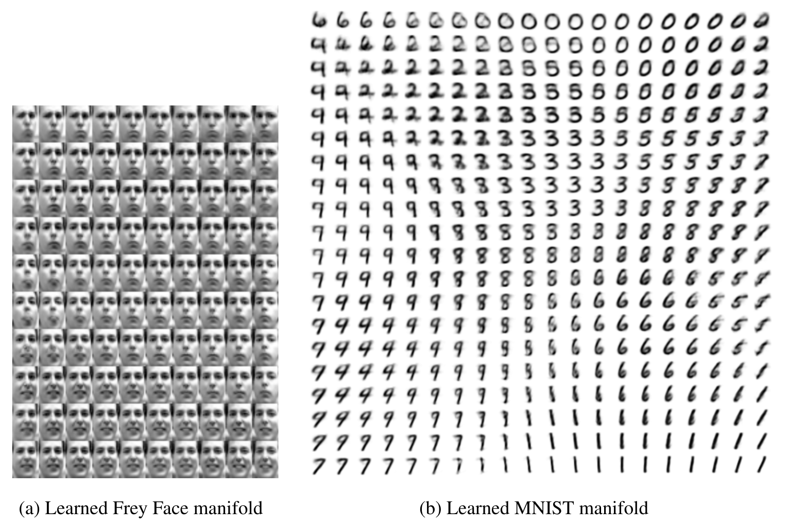

One input, one address
x [D] → f(x) = h [J] → g(h) = x̂ [D]
The decoder is trained on addresses the encoder visits. Nothing in reconstruction alone says that a random address, or a point between two addresses, should decode sensibly.
A one-hour active lesson in generative modeling
A variational autoencoder turns isolated compressed codes into a probabilistic atlas: every observation gets a small cloud of plausible coordinates, while the decoder learns what nearby coordinates mean.
Scroll horizontally to compare the full lesson diagram.
An ordinary autoencoder already gives us two neural networks. An encoder compresses an observation x ∈ RD into one code h ∈ RJ; a decoder maps that code back to a reconstruction x̂ ∈ RD. Training minimizes a reconstruction error such as squared error or binary cross-entropy.
x [D] → f(x) = h [J] → g(h) = x̂ [D]
The decoder is trained on addresses the encoder visits. Nothing in reconstruction alone says that a random address, or a point between two addresses, should decode sensibly.
x [D] → (μ, σ) [J] → z [J] → pθ(x|z)
The encoder describes plausible addresses, not a single point. A prior and a KL cost organize all those clouds into one coordinate system.
(-8, 3) and (12, -5). Reconstruction is excellent. Should you trust the decoder at (2, -1)?No. Reconstruction only trained the decoder at codes produced by the encoder. Without a distributional constraint, the midpoint may lie in an unsupported gap. This is why "good compressor" does not automatically mean "sampleable generator."
The paper starts with a directed generative process. First draw an unobserved continuous cause z ∼ pθ(z). Then draw an observation x ∼ pθ(x|z). Running this story forward is easy. Learning from observed x requires the reverse question: which latent causes could have produced it?
For the nonlinear decoder the paper cares about, that integral and the true posterior pθ(z|x) can be intractable. Iterative inference or a sampling loop for every datapoint is also too costly for a large dataset. The paper therefore learns one recognition model qφ(z|x) that makes a fast posterior approximation for any input. Today we call this amortized inference: the shared encoder pays the inference cost once through learning rather than solving a fresh optimization problem for every example.
Mean-field updates or MCMC can require an inner loop for every x. Monte Carlo EM is correspondingly difficult to scale to the full dataset in the paper's comparison.
A neural encoder predicts the approximate posterior parameters directly. A minibatch can then update both encoder φ and decoder θ.
qφ(z|x).log pθ(x).Keep the generative direction and inference direction separate. The decoder says how latent causes produce data; the encoder guesses latent causes after data has been observed.
| Actor | Shape in one minibatch | Job |
|---|---|---|
X | [M, D] | A minibatch of M observations, each with D measured dimensions. |
p(z) = N(0, I) | distribution over [J] | The agreed coordinate system from which generation begins. |
qφ(z|x) | μ, log σ2: [M, J] | The probabilistic encoder; it approximates the intractable true posterior. |
ε ∼ N(0, I) | [M, J] | Parameter-free noise. It contributes randomness without hiding the gradient path. |
z = μ + σ ⊙ ε | [M, J] | A sampled latent coordinate. The product is elementwise, so all three vectors share shape [J] per example. |
pθ(x|z) | decoder parameters: [M, D] | A Bernoulli distribution for binary data or Gaussian distribution for real-valued data in the paper's example. |
log pθ(x|z) | [M], then scalar | The reconstruction log-likelihood, not merely a picture-space distance with no probabilistic meaning. |
DKL(qφ || p) | [M], then scalar | The price paid when an input's posterior cloud departs from the prior. |
Introduce any approximate posterior qφ(z|x). The paper's Equation 1 decomposes the log evidence into a lower bound plus a non-negative gap:
We cannot evaluate the gap because it contains the intractable true posterior. But we can maximize the lower bound itself. Rearranging the joint probability produces the paper's Equation 3, the form most closely associated with a VAE:
x. This makes each cloud informative.For a diagonal Gaussian qφ(z|x) = N(μ, diag(σ2)) and standard-normal prior, the KL cost is analytic:
N(0,1): (μ,σ)=(0,1), (2,1), or (0,0.5)?(0,1) has zero cost because it matches the prior exactly. (2,1) costs ½(4+1-log 1-1)=2. (0,0.5) costs about 0.318: shrinking the cloud also encodes information and therefore departs from the unit prior.
The expected reconstruction term needs samples from qφ(z|x). If we write only z ∼ N(μ, σ2), the sampling operation obscures how a change in the encoder parameters should change the sampled value. The paper's reparameterization writes the same random variable as deterministic arithmetic applied to fixed-source noise:
Think of moving a dice roll to the calculator's input. Each update still sees a random roll, but once the roll is known, turning the μ and σ knobs changes z through ordinary arithmetic. The reconstruction signal can therefore flow backward through the decoder, through z, and into the encoder.
Scroll horizontally to follow the full lesson diagram.
μ, σ, and ε all have latent shape [M,J]; the ELBO becomes one scalar whose gradient reaches both parameter sets.These are lesson-only arithmetic examples, not measurements reported by the paper. Each follows one binary observation through reparameterization, reconstruction likelihood, KL, and the final ELBO. For a Bernoulli decoder and binary vector x, reconstruction is:
Let the observation, encoder outputs, and noise draw be:
0.106.Use the same observation, but let the encoder outputs and noise draw be:
1.045.Before moving a control, predict what happens when σ shrinks while μ and ε stay fixed. The sample moves toward μ, but the KL penalty generally rises as the cloud becomes narrower than the unit prior.
Sample: z = 0.20 + 0.80(0.50) = 0.60.
Terms: reconstruction log-likelihood = -0.292; KL = 0.063; ELBO = -0.356.
With the default μ=0.2 and ε=0.5, reducing σ from 0.8 to 0.3 moves z from 0.60 to 0.35. In this fixed illustrative decoder, reconstruction gets worse and KL rises sharply because a narrow posterior carries more information than N(0,1). The ELBO falls. Other decoders can give different reconstruction changes; the KL direction is the durable lesson.
Once the expectation is reparameterized, AEVB looks like a familiar stochastic training loop. The paper's Algorithm 1 uses minibatches of M=100 and one latent sample per datapoint (L=1) in its experiments:
XM.μ and σ.ε and form z=μ+σ⊙ε.z and estimate the reconstruction term.θ and φ, then update them with a stochastic optimizer.The paper evaluates on MNIST and Frey Face using simple multilayer perceptron encoders and decoders. Its Figure 2 compares AEVB with wake-sleep across several latent dimensions and reports that AEVB converged considerably faster and reached a better variational lower bound in every displayed setting. Figure 3 adds Monte Carlo EM for low-dimensional MNIST; the paper notes that Monte Carlo EM is not an online method and cannot be efficiently applied to full MNIST.

pθ(x|z). Read rows and columns as latent traversals: nearby coordinates tend to decode to nearby-looking faces or digits. This is qualitative evidence that the decoder learned a locally navigable two-dimensional region—not proof that every coordinate has an independent human meaning, or that arbitrary latent points decode well.The estimator enabled joint stochastic training of a probabilistic encoder and decoder, optimized the displayed lower bounds more effectively than wake-sleep, and produced interpretable two-dimensional decoded traversals on these datasets.
It does not show modern image fidelity, guaranteed disentanglement, a universally smooth latent space, or superiority to every later generative model. Figure 4 is a selected low-dimensional visualization.
The paper's central estimator assumes continuous latent variables that can be expressed through a differentiable transformation of parameter-free noise. The diagonal-Gaussian posterior used in its VAE example is a simplifying modeling choice; it can be too rigid when the true posterior is multimodal or strongly correlated.
Incomplete. The defining package is a generative model, a probabilistic encoder, a prior, the ELBO, and reparameterized stochastic optimization. Noise alone does not organize a sampleable latent space.
No. It charges for deviation on each datapoint, while reconstruction rewards informative deviations. The aggregate result is a trade-off, not identical posteriors for all inputs.
No. It relocates randomness to ε. The sample remains random across draws; the path from encoder outputs to that sample becomes differentiable for a fixed draw.
No. The gap is DKL(qφ(z|x) || pθ(z|x)). The bound is tight only when the approximate posterior matches the true posterior.
No. It is a log-likelihood under the chosen decoder distribution. The paper uses Bernoulli outputs for binary data and Gaussian outputs for real-valued data.
No. Smooth local changes are compatible with entangled coordinates. The original paper does not claim that each latent dimension independently names a human concept.
Its decoder is trained only on codes produced by its encoder. Reconstruction alone does not constrain arbitrary latent points or gaps between codes to represent plausible data.
An expected reconstruction log-likelihood asks whether sampled latent codes explain the observation; a KL cost asks how far the approximate posterior moves from the prior. The ELBO is reconstruction minus that cost.
One mean and one scale (often represented as log variance) for each of J latent dimensions. It parameterizes a distribution rather than emitting the final random sample directly.
The noise distribution no longer depends on encoder parameters. For a fixed ε, z is differentiable with respect to μ and σ, so reconstruction gradients can reach the encoder.
It shows that nearby points on selected two-dimensional latent grids decode into gradually changing faces and digits. It does not prove disentanglement, uniform sample quality, or modern image fidelity.
Both can begin with a latent draw and end with a generated sample. A GAN learns through an adversarial discriminator; a VAE learns an explicit likelihood lower bound and also provides an encoder for approximate inference.
Reparameterization makes a usable stochastic gradient estimator available. Adam can then scale and accumulate those gradients; it does not solve the latent-variable inference problem itself.
Both lessons use KL to control departure from a reference distribution. In AEVB, each approximate posterior is compared with a latent prior; in DPO, a trainable policy is regularized relative to a reference policy. The objects and objectives are different.
A VAE is a learned probabilistic atlas. The encoder places each observation as a cloud on a shared prior map; the decoder learns what coordinates mean. The ELBO makes information pay rent through KL, and reparameterization keeps the sampled route differentiable enough to train with ordinary stochastic gradients.